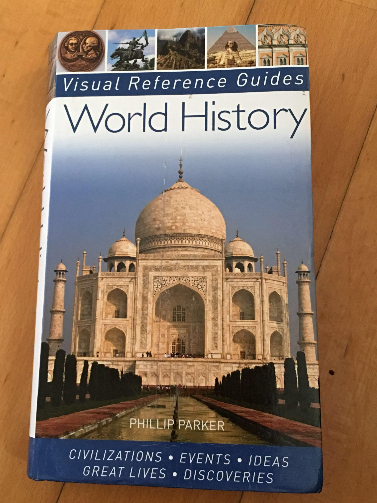

historical sites
world histroy 
Philip Parker's History of the World is a historical book that will make it easier for a history researcher to discover the events that have shaped the world from the beginning of civilization to our digital world, where the book, which views the history of the world as several turning points, revives each of these events through photographs, maps and paintings to illustrate them to the reader further.
For more information click on the following link
world-history
Dawn of conscience
.jpg)
This book is one of the most important books that analyzes in philosophical depth the history of human civilization since its inception, and deals with the famous American historian James Henry Prested through the sequence of narration at the beginning of the dawn of the human conscience, and the psychological morality in the Nile Valley for more than 5,000 thousand years, until the extinguishment of the glare of civilization in Egypt in 525 B.C., and the transfer of the book to Arabic 1956 Dr. Salim Hassan Sheikh archaeologists.
For more information click on the following link
Dawn of conscience
Historian Will Durant Dies
The author of this book is the philosopher and historian Will Durant, and the British historian Henry Thomas Buckle is the inspiration for Durant in writing The Story of Civilization, where Durant was inspired by Thomas Buckle's Book (Introduction to the History of Civilization), and the Story of Civilization is a successful book because he is interested in human achievements in various fields, such as science, literature, philosophy, rather than mentioning bad things, political, military and economic crimes.
For more information click on the following link
Historian Will Durant Dies
Introduction to the History of Civilization
The capacity of the article I have gathered on the civilization of the Mesopotamian Valley necessitated the distribution of this article in two parts, the first part of which I present to the readers now, to date the ancient Iraq from the most distant prehistoric period to the end of the Sassanid era, i.e. the beginning of the Arab-Islamic conquest, summarizing the covenants of this long history in the old times, and the summary of political and cultural events and the dynasties and states in which it ruled and the accompanying economic, social and artistic changes, and in short the cultural and cultural characteristics of each of its roles. Historical.
For more information click on the following linkIntroduction to the History of Civilization